Unidad 2 - Programación Estructurada: Estructuras de Control y Repetición
Objetivos de la Unidad
Al finalizar esta unidad serás capaz de:
- Comprender los fundamentos de la programación modular y estructurada.
- Diseñar algoritmos usando diagramas de flujo y pseudocódigo.
- Implementar en Java las tres estructuras de control: secuencial, condicional y repetitiva.
- Usar arrays unidimensionales (vectores) y bidimensionales (matrices) para almacenar colecciones de datos.
- Manipular cadenas de texto con los métodos de la clase
String.
1 Introducción: Construyendo programas sólidos
En esta unidad vamos a sentar las bases para crear programas que no solo funcionen, sino que sean claros, sencillos de mantener y fáciles de ampliar. Para ello, nos apoyaremos en dos pilares fundamentales: la Programación Modular y la Programación Estructurada.
2 Programación Modular: Construyendo con piezas de LEGO
Imagina que quieres construir un castillo de LEGO. No empiezas uniendo piezas al azar, ¿verdad? Lo más probable es que construyas primero las torres, luego las murallas, el puente... y finalmente lo unes todo.
La programación modular aplica exactamente esa idea: consiste en dividir un programa grande y complejo en partes más pequeñas e independientes, llamadas módulos.
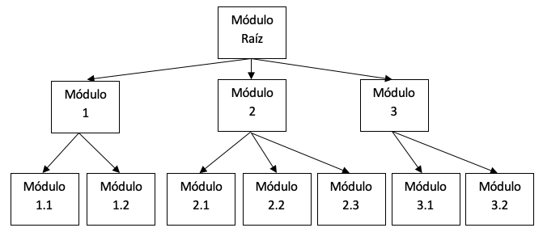
Un módulo es un fragmento de código que resuelve una parte muy concreta del problema. Cada módulo se puede programar y probar por separado, como si fuera una pieza de LEGO.
Esta técnica, también conocida como diseño Top-Down (de lo general a lo particular), nos aporta enormes ventajas:
Ventajas de la Programación Modular
- Claridad: Es más fácil entender un programa dividido en partes lógicas.
- Reutilización: Un mismo módulo puede usarse en diferentes programas.
- Facilidad de depuración: Si algo falla, solo revisas ese módulo, no el programa entero.
- Trabajo en equipo: Diferentes programadores pueden trabajar en distintos módulos a la vez.
3 Programación Estructurada: Las reglas de tráfico del código
Si la programación modular nos dice "divide y vencerás", la programación estructurada nos dice cómo construir cada una de esas divisiones.
Se basa en el famoso Teorema de la Estructura, que demuestra algo asombroso: cualquier programa, por complejo que sea, puede construirse usando únicamente tres tipos de estructuras de control:
| Estructura | Analogía | Descripción |
|---|---|---|
| Secuencial | Calle de sentido único | Las instrucciones se ejecutan una tras otra, en orden |
| Condicional | Bifurcación en la carretera | El programa decide qué camino tomar según una condición (if-else) |
| Repetitiva | Rotonda | El programa repite un bloque hasta que se cumple la condición de salida (while, for) |
Teorema de la Estructura
Formulado por Böhm y Jacopini: "Todo programa propio — con un solo punto de entrada y un solo punto de salida — puede escribirse usando únicamente estructura secuencial, condicional y repetitiva."
4 El Algoritmo: El plano de nuestra construcción
Un algoritmo es el plano detallado para resolver un problema: una serie de pasos claros y finitos. Para representarlos, usaremos dos herramientas:
- Diagrama de flujo: Representación gráfica con símbolos y flechas. Muy visual.
- Pseudocódigo: Lenguaje intermedio entre el lenguaje humano y el código, que permite centrarse en la lógica sin preocuparse por la sintaxis estricta.
Características de un buen algoritmo
Un algoritmo de calidad debe ser sencillo y eficiente (usar el mínimo tiempo y memoria posibles).
Los elementos de un algoritmo son:
- Instrucciones: de entrada, de salida, de asignación
- Estructuras de control: bifurcaciones y repeticiones
5 Elementos de un algoritmo
5.1 Inicio y Fin
Todo algoritmo tiene un punto de partida y un final claros:
- NOMBRE DEL ALGORITMO — el nombre que identifica su propósito.
- INICIO — punto de entrada.
- FIN — finalización.
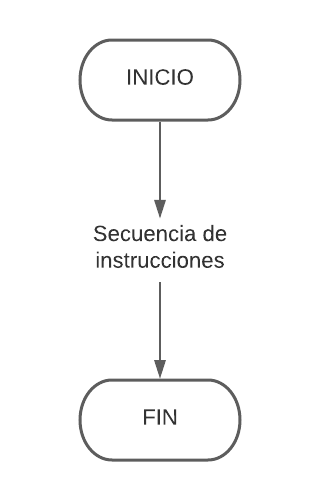
5.2 Instrucciones de asignación
Una asignación consiste en guardar un valor en una variable. Se representa con un rectángulo en el diagrama de flujo.
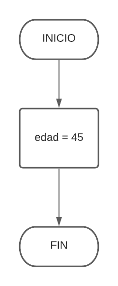
En pseudocódigo, las variables y constantes se declaran antes del INICIO:
- CONSTANTES: Su valor no cambia. Por convenio, en mayúsculas.
- VARIABLES: Su valor puede cambiar durante la ejecución.
5.3 Instrucciones de Entrada y Salida
Son la forma en que nuestro programa se comunica con el exterior (normalmente, el usuario). Se representan con figuras romboides o trapecios.
- Entrada: Leer datos del teclado.
- Salida: Mostrar información en pantalla.
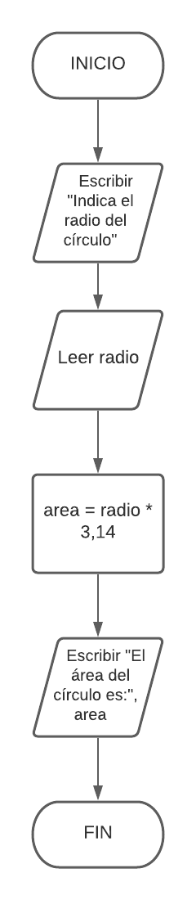
5.4 Estructuras Alternativas (Condicionales)
Son las bifurcaciones del código. Permiten ejecutar un bloque u otro según si una condición es verdadera o falsa.
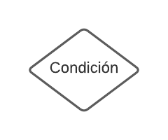
5.4.1 Condicional if (Simple)
Ejecuta un bloque de código solo si la condición es verdadera.
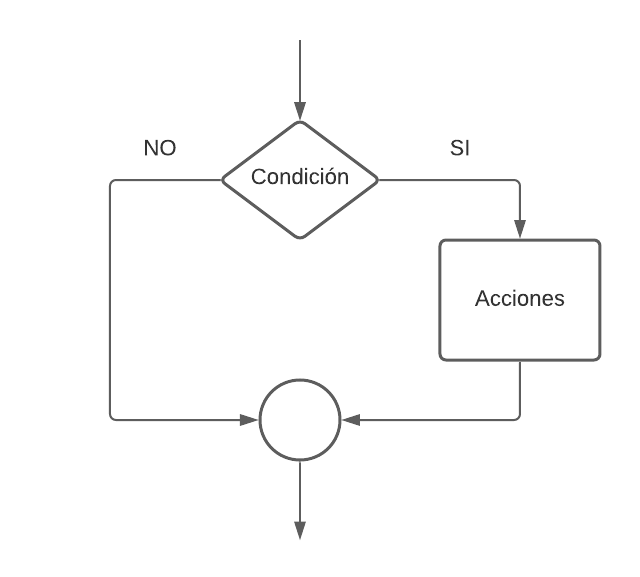
Ejemplo: solicitar una edad y mostrar "Mayor de edad" si es ≥ 18.
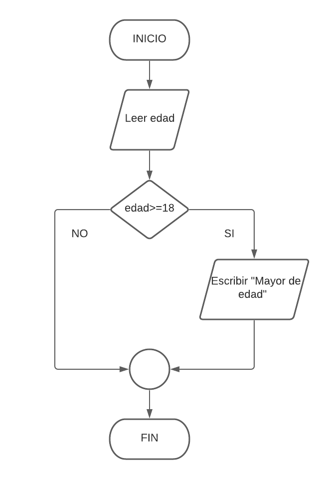
5.4.2 Condicional if-else (Doble)
Proporciona un camino alternativo cuando la condición es falsa.
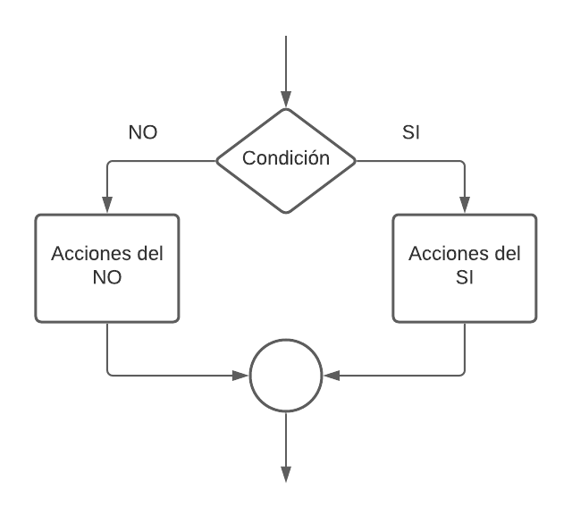
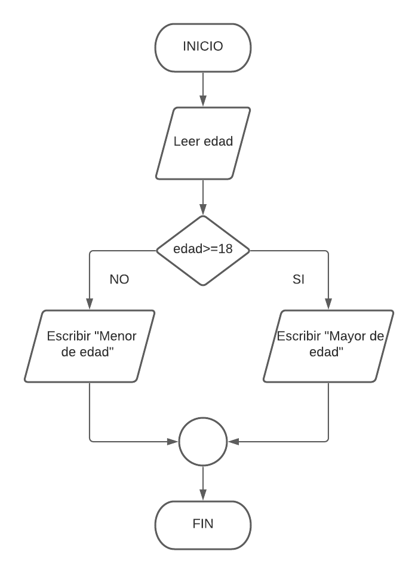
5.4.3 Condicional if else-if else (Anidada)
Permite encadenar varias condiciones. El programa evalúa cada una en orden y ejecuta el primer bloque cuyo resultado sea verdadero.
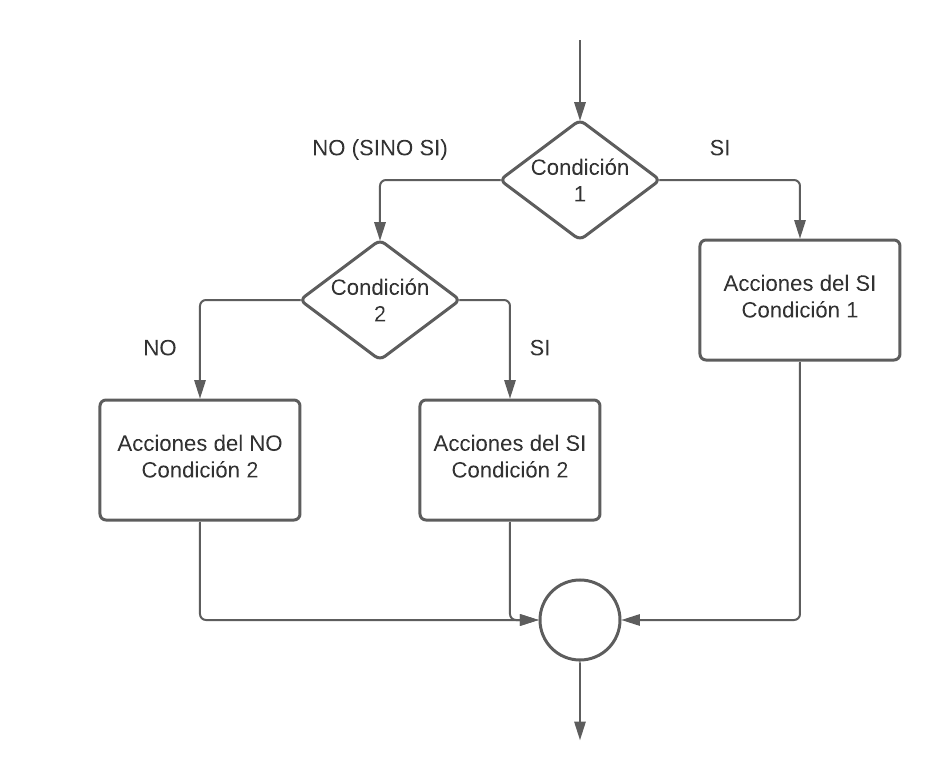
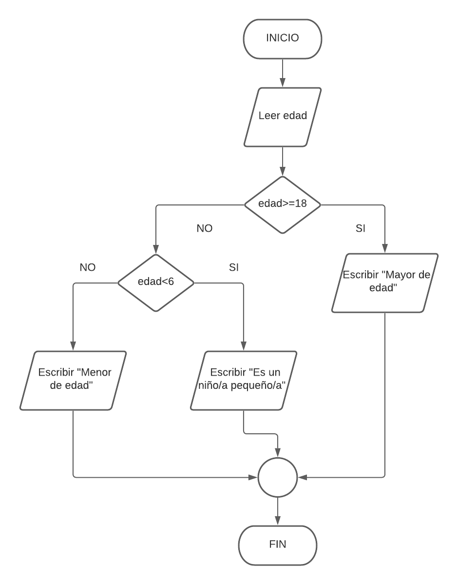
Ejemplo avanzado: condiciones de distinto tipo
Un if anidado no tiene por qué evaluar el mismo tipo de dato. Podemos combinar comprobaciones numéricas y booleanas para crear lógicas más complejas.
Caso: Control de acceso a un evento. Un menor solo puede entrar si va acompañado.
5.4.4 Condicional switch (Múltiple)
Es una alternativa más limpia al if-else if cuando se compara una sola variable contra una lista de valores concretos.
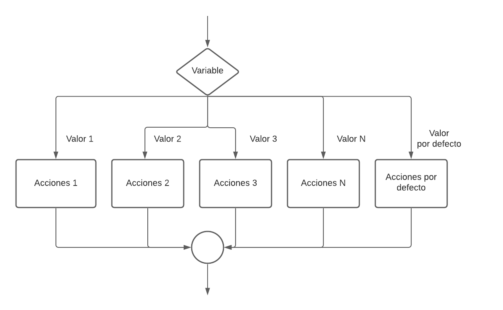
¿Cuándo usar switch en lugar de if-else?
Usa switch cuando compruebes el valor exacto de una variable (un menú, una letra, un código). Usa if-else cuando las condiciones impliquen rangos o comparaciones complejas.
Ejemplo: identificar una vocal mayúscula.
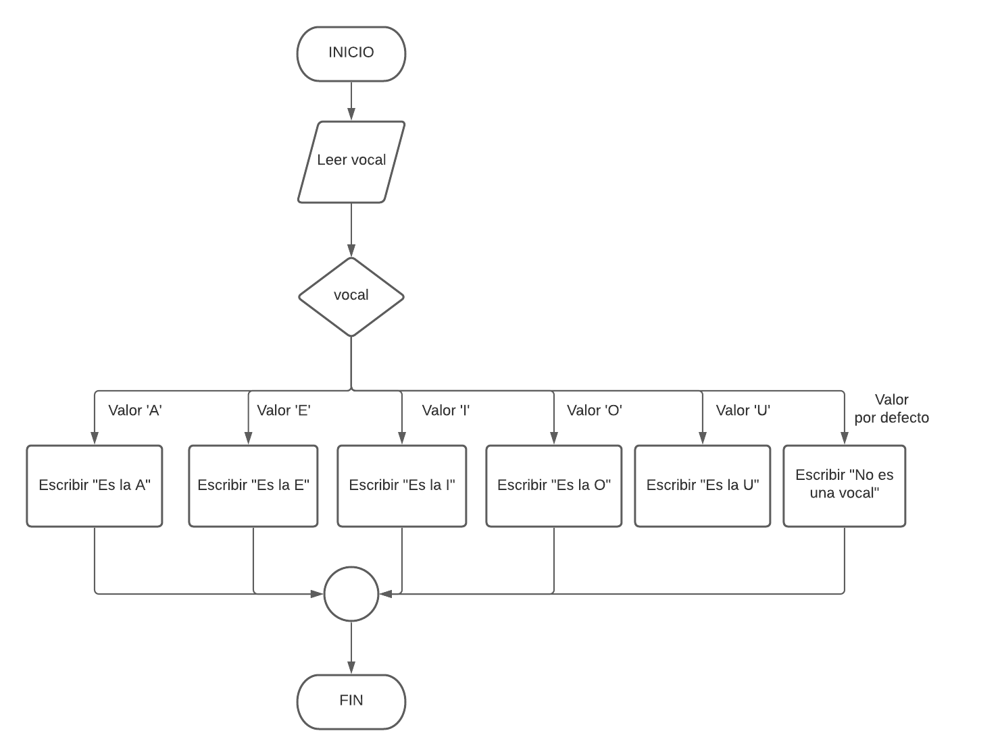
¡No olvides el break!
Sin break, Java continuará ejecutando los case siguientes aunque no coincidan. Este comportamiento se llama fall-through y es una fuente frecuente de errores.
Un uso muy típico del switch es construir menús de opciones:
5.5 Estructuras Repetitivas (Bucles)
Son las rotondas del código. Permiten repetir un bloque de instrucciones múltiples veces.
Comparativa de los tres bucles
| Bucle | ¿Cuándo se comprueba la condición? | Ejecuciones mínimas | Mejor para... |
|---|---|---|---|
while |
Antes de cada iteración | 0 | Número desconocido de repeticiones |
do-while |
Después de cada iteración | 1 (siempre ejecuta al menos una vez) | Menús y validaciones de entrada |
for |
Antes de cada iteración | 0 | Número conocido de repeticiones |
5.5.1 Bucle while (Mientras)
Repite un bloque de código mientras una condición sea verdadera. La condición se comprueba antes de cada vuelta.
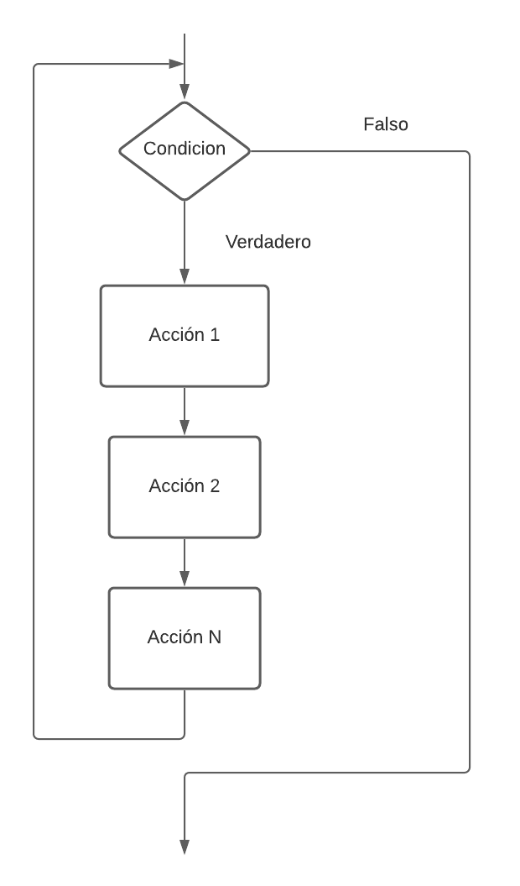
Ejemplo: tabla de multiplicar con while.
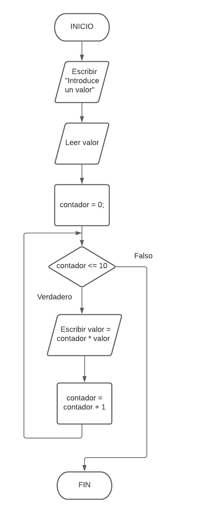
Cuidado con los bucles infinitos
Si la condición del while nunca se hace falsa, el programa se ejecutará para siempre. Asegúrate de que la variable de control cambia dentro del bucle.
5.5.2 Bucle do-while (Hacer-Mientras)
Similar al while, pero la condición se comprueba después de cada vuelta. El bloque se ejecuta al menos una vez.
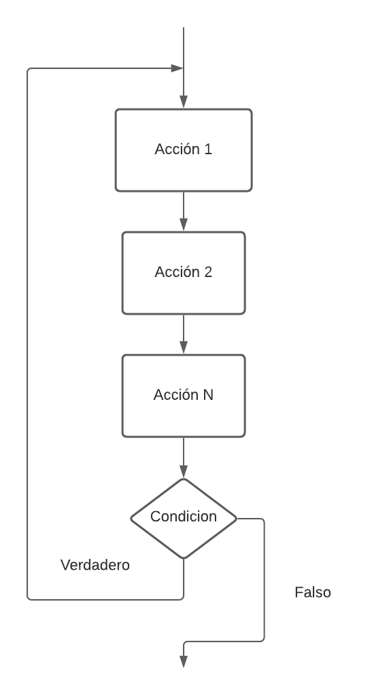
Ejemplo: pedir un número positivo (si el usuario introduce uno negativo, se vuelve a pedir).
Uso ideal del do-while
Es perfecto para menús de opciones: siempre quieres mostrar el menú al menos una vez antes de preguntar si el usuario desea continuar.
5.5.3 Bucle for (Para)
El bucle ideal cuando sabemos de antemano el número exacto de repeticiones. Compacta en una sola línea la inicialización, la condición y el incremento.
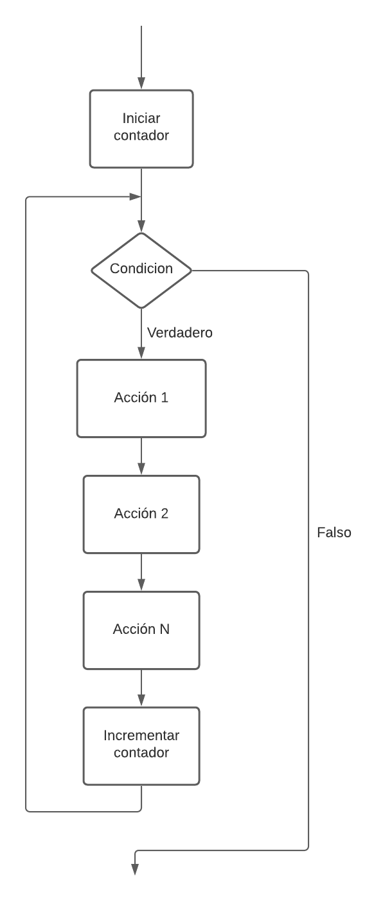
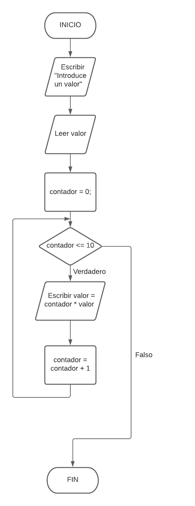
Ejemplo: tabla de multiplicar con for.
6 Elementos Auxiliares: Herramientas dentro de los bucles
Dentro de los bucles, es habitual usar variables con roles muy específicos:
Variables auxiliares más comunes
| Tipo | Descripción | Nombres típicos | Analogía |
|---|---|---|---|
| Contador | Cuenta sucesos (+1 en cada iteración) | i, j, contador |
El portero que pulsa un contador por cada persona que entra |
| Acumulador | Suma cantidades variables para obtener un total | suma, total, acumulado |
El carrito de la compra donde vas añadiendo productos |
| Bandera (Flag) | boolean que recuerda si un evento ha ocurrido |
encontrado, fin, salir |
Una bandera que se levanta al encontrar lo que se buscaba |
7 Vectores y Matrices: Almacenando Datos en Colección
Hasta ahora, cada variable guardaba un solo dato. Pero, ¿y si necesitamos guardar las notas de 30 alumnos? Para eso usamos los arrays.
7.1 Vectores (Arrays Unidimensionales)
Un vector es una estructura que almacena un conjunto de datos del mismo tipo en posiciones contiguas de memoria.
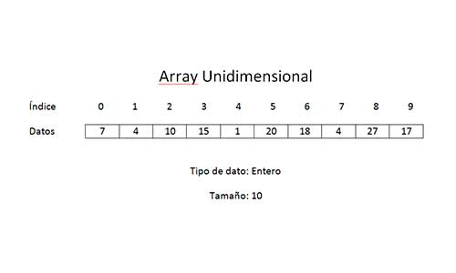
Analogía: el tren
Piensa en un tren. El tren entero es el vector, cada vagón es un elemento, y el número del vagón es su índice. ¡El primer vagón siempre es el número 0!
Declaración y acceso en Java:
Los bucles for son el compañero perfecto para recorrer vectores:
Inicialización directa
Si ya conocemos los valores, podemos declarar e inicializar el vector en un solo paso:
Caso de Uso 1: Acumulador — Cesta de la compra
Usamos un vector para guardar los precios de varios productos y un acumulador para el total.
Caso de Uso 2: Vectores Paralelos — Nombres y Edades
Dos vectores donde el índice i de uno está relacionado con el índice i del otro.
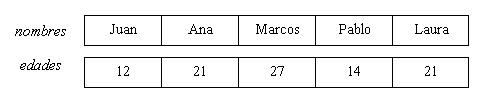
nextLine() después de nextInt()
Tras leer un entero con nextInt(), el carácter \n queda en el buffer. Si no lo consumes con teclado.nextLine(), el siguiente nextLine() leerá una cadena vacía.
7.2 Matrices (Arrays Bidimensionales)
Una matriz es un vector de vectores: organiza la información en una tabla con filas y columnas.
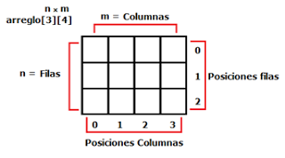
Analogía: el tablero de ajedrez
Para localizar una casilla necesitas dos coordenadas: fila y columna. Una matriz funciona exactamente igual.
Declaración y acceso en Java:
Para recorrer una matriz se usan dos bucles for anidados: el exterior para las filas, el interior para las columnas:
7.3 Lectura y Escritura de Matrices
Ejemplo completo: Gestión de una matriz dinámica
Caso de Uso: Tablero de Tres en Raya
Una matriz char[3][3] es perfecta para representar un tablero de juego.
8 Strings: La navaja suiza para manejar texto
Un String en Java es un objeto que ofrece métodos muy útiles para manipular cadenas de texto.
La regla de oro: usa equals(), nunca ==
variable1 == variable2compara si dos variables apuntan al mismo objeto en memoria.variable1.equals(variable2)compara si los contenidos (el texto) son iguales.
Usar == para comparar el contenido de dos String es uno de los errores más comunes y difíciles de detectar.
Métodos más útiles de la clase String:
| Método | Descripción |
|---|---|
length() |
Devuelve el número de caracteres |
charAt(indice) |
Devuelve el carácter en una posición |
toUpperCase() / toLowerCase() |
Convierte a mayúsculas o minúsculas |
substring(inicio, fin) |
Extrae un fragmento de la cadena |
indexOf(texto) |
Posición de la primera aparición (-1 si no existe) |
contains(texto) |
true si la cadena contiene el texto |
replace(viejo, nuevo) |
Reemplaza todas las apariciones |
trim() |
Elimina espacios al inicio y al final |
split(delimitador) |
Divide la cadena en un array de String |
Ejemplo: validar y descomponer un email.